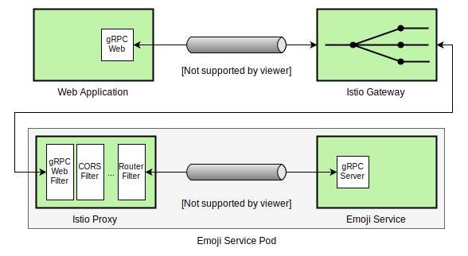
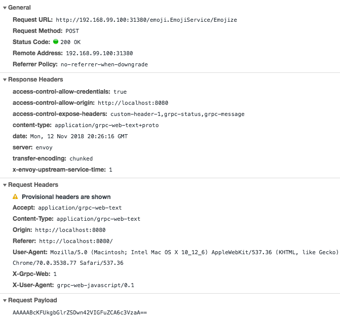

Seamless Cloud-Native Apps with gRPC-Web and Istio
gRPC-Web enables web applications to access gRPC backends via a proxy like Envoy. Envoy serves as the default proxy for Istio, and, so, we can leverage Istio’s EnvoyFilter construct to create seamless, well connected, Cloud-Native web applications.

Introduction
In this post, I’ll walk you through the process of building a simple web application that replaces keywords in user-entered text with emojis by communicating with a gRPC backend via gRPC-Web and Istio.
Below is an outline of the steps we’ll follow to create the emoji application.
- Define the protocol format using Protobuf
- Compile the Protobuf definition to generate Go and JavaScript files
- Build and test a Go based gRPC service that replaces keywords in input text with emojis
- Create a web interface for the emoji service using gRPC-Web
- Configure the EnvoyFilter and deploy the backend over Istio
- Deploy the web application and test our emoji service
The Architecture
Let’s dive a little deeper to understand what the final architecture for the emoji service will look like.

Simply put, the web application will leverage the gRPC-Web library to send HTTP requests to the Istio Gatway whenever the user supplies some text. The Istio Gateway will then route the HTTP request to the Proxy sidecar running alongside the emoji service backend, which will then translate the HTTP call to a gRPC call using Envoy’s gRPC-Web filter.
Defining The Protocol Format
First, let’s define the protocol format using Protobuf.
syntax = "proto3";
package emoji;
service EmojiService {
rpc Emojize (EmojizeRequest) returns (EmojizeReply);
}
message EmojizeRequest {
string text = 1;
}
message EmojizeReply {
string emojized_text = 1;
}
We define a simple service named EmojiService that understands a rpc call
named Emojize which accepts an EmojizeRequest object and returns an instance
of EmojizeReply.
The message named EmojizeRequest holds a string field named text to
represent user-entered text. Also, EmojizeReply holds a string named
emojized_text to represent the final output string wherein the server will
have replaced known emoji keywords with an actual emoji character.
Compiling The Protobuf Definition
Let’s first create the project directory structure like grpc-web-emoji/emoji/
and put the above definition in a file named emoji.proto.
We can now compile the emoji.proto file and generate the necessary Go files.
$ protoc -I emoji/ emoji/emoji.proto --go_out=plugins=grpc:emoji
Similarly, we also generate the JavaScript files.
$ protoc -I emoji/ emoji/emoji.proto --js_out=import_style=commonjs:emoji \
--grpc-web_out=import_style=commonjs,mode=grpcwebtext:emoji
At this point, you should land up with a directory structure like below.
── grpc-web-emoji
└── emoji
├── emoji.pb.go
├── emoji.proto
├── emoji_grpc_web_pb.js
└── emoji_pb.js
Building And Testing The Go Backend
Let’s now create a go program that implements the EmojiService API. To do so,
we create a file named main.go with the following contents.
package main
import (
"context"
"log"
"net"
proto "github.com/venilnoronha/grpc-web-emoji/emoji"
"google.golang.org/grpc"
"google.golang.org/grpc/reflection"
emoji "gopkg.in/kyokomi/emoji.v1"
)
// server is used to implement the EmojiService interface
type server struct{}
// Emojize takes a input string via EmojizeRequest, replaces known keywords with
// actual emoji characters and returns it via a EmojizeReply instance.
func (s *server) Emojize(c context.Context, r *proto.EmojizeRequest)
(*proto.EmojizeReply, error) {
return &proto.EmojizeReply{EmojizedText: emoji.Sprint(r.Text)}, nil
}
func main() {
// listen to TCP requests over port 9000
lis, err := net.Listen("tcp", ":9000")
if err != nil {
log.Fatalf("failed to listen: %v", err)
}
log.Printf("listening on %s", lis.Addr())
// register the EmojiService implementation with the gRPC server
s := grpc.NewServer()
proto.RegisterEmojiServiceServer(s, &server{})
reflection.Register(s)
if err := s.Serve(lis); err != nil {
log.Fatalf("failed to serve: %v", err)
}
}
I’ve used the kyokomi/emoji library to do the heavy lifting i.e. converting keywords from input text into emojis.
Let’s start the server, like so:
$ go run -v main.go
2018/11/12 10:45:12 listening on [::]:9000
It’s now time to test the emoji service programmatically. We’ll do so by
creating a new client implementation named emoji_client.go with the following
contents.
package main
import (
"log"
"time"
proto "github.com/venilnoronha/grpc-web-emoji/emoji"
"golang.org/x/net/context"
"google.golang.org/grpc"
)
func main() {
// connect to the server
conn, err := grpc.Dial("localhost:9000", grpc.WithInsecure())
if err != nil {
log.Fatalf("could not connect to the service: %v", err)
}
defer conn.Close()
// send a request to the server
ctx, cancel := context.WithTimeout(context.Background(), time.Second)
defer cancel()
c := proto.NewEmojiServiceClient(conn)
resp, err := c.Emojize(ctx, &proto.EmojizeRequest{
Text: "I like :pizza: and :sushi:!",
})
if err != nil {
log.Fatalf("could not call service: %v", err)
}
log.Printf("server says: %s", resp.GetEmojizedText())
}
We can now run the emoji service client as shown below.
$ go run emoji_client.go
2018/11/12 10:55:52 server says: I like 🍕 and 🍣 !
Voila! The gRPC emoji service works as expected, and it’s now time to get the web frontend up and running.
Creating The Web Interface Using gRPC-Web
First, let’s create a HTML page named index.html. The page displays a text
editor to the user and calls a emojize function (which we’ll define later) to
send the user-input to the backend emoji service. The emojize function will
also consume the gRPC response from the backend service and update the user
input field with the data given out by the server.
<!DOCTYPE html>
<html>
<body>
<div id="editor" contentEditable="true" hidefocus="true" onkeyup="emojize()"></div>
<script src="dist/main.js"></script>
</body>
</html>
Let’s put the JavaScript code for the web frontend in a file named client.js
as shown below.
const {EmojizeRequest, EmojizeReply} = require('emoji/emoji_pb.js');
const {EmojiServiceClient} = require('emoji/emoji_grpc_web_pb.js');
var client = new EmojiServiceClient('http://192.168.99.100:31380');
var editor = document.getElementById('editor');
window.emojize = function() {
var request = new EmojizeRequest();
request.setText(editor.innerText);
client.emojize(request, {}, (err, response) => {
editor.innerText = response.getEmojizedText();
});
}
Notice that the EmojiServiceClient connects with the backend emoji service at
http://192.168.99.100:31380 and not http://localhost:9000. This is because
the web application can’t directly speak with a gRPC backend, and, therefore,
we’ll be deploying our backend emoji service over Istio. The Istio deployment
will be running on Minikube with
the IP address of 192.168.99.100 and the default Istio Ingress port exposed
for HTTP is 31380.
We’ll now need a couple of libraries to generate the final dist/main.js which
we reference in index.html. To do so, we use the following npm
package.json configuration.
{
"name": "grpc-web-emoji",
"version": "0.1.0",
"description": "gRPC-Web Emoji Sample",
"devDependencies": {
"@grpc/proto-loader": "^0.3.0",
"google-protobuf": "^3.6.1",
"grpc": "^1.15.0",
"grpc-web": "^1.0.0",
"webpack": "^4.16.5",
"webpack-cli": "^3.1.0"
}
}
At this point, we can install the libraries and generate dist/main.js using
the following commands.
$ npm install
$ npx webpack client.js
Deploying The Backend Over Istio
We can now package the backend emoji service into a container and deploy it over
Istio. We’d need to install the gRPC-Web EnvoyFilter here so that calls to the
backend gRPC service can be translated to/from gRPC and HTTP.
Let’s start off by building the Docker image with the following Dockerfile.
FROM golang:1.11 as builder
WORKDIR /root/go/src/github.com/venilnoronha/grpc-web-emoji/
COPY ./ .
RUN CGO_ENABLED=0 GOOS=linux go build -a -installsuffix cgo -v -o emoji-service main.go
FROM scratch
WORKDIR /bin/
COPY --from=builder /root/go/src/github.com/venilnoronha/grpc-web-emoji/emoji-service .
ENTRYPOINT [ "/bin/emoji-service" ]
CMD [ "9000" ]
EXPOSE 9000
We can build and push the image to Docker Hub like so:
$ docker build -t vnoronha/grpc-web-emoji .
$ docker push vnoronha/grpc-web-emoji
Next, we define the Kubernetes Service and Deployment configuration as shown
below. Let’s call this backend.yaml.
apiVersion: v1
kind: Service
metadata:
name: backend
labels:
app: backend
spec:
ports:
- name: grpc-port
port: 9000
selector:
app: backend
---
apiVersion: extensions/v1beta1
kind: Deployment
metadata:
name: backend
spec:
replicas: 1
template:
metadata:
labels:
app: backend
version: v1
spec:
containers:
- name: backend
image: vnoronha/grpc-web-emoji
imagePullPolicy: Always
ports:
- containerPort: 9000
Note that once we deploy this service over Istio, the grpc- prefix in the
Service port name will allow Istio to recognize this as a gRPC service.
Since we want the gRPC-Web filter to be installed on the backend sidecar
proxy, we need to install it prior to deploying the backend service. The
EnvoyFilter configuration is shown below. We name this filter.yaml.
apiVersion: networking.istio.io/v1alpha3
kind: EnvoyFilter
metadata:
name: grpc-web-filter
spec:
workloadLabels:
app: backend
filters:
- listenerMatch:
listenerType: SIDECAR_INBOUND
listenerProtocol: HTTP
insertPosition:
index: FIRST
filterType: HTTP
filterName: "envoy.grpc_web"
filterConfig: {}
Next, we need to define an Istio Gateway to route HTTP traffic over to the
backend service. To do so, we write the following configuration to a file named
gateway.yaml.
apiVersion: networking.istio.io/v1alpha3
kind: DestinationRule
metadata:
name: backend
spec:
host: backend
subsets:
- name: v1
labels:
version: v1
---
apiVersion: networking.istio.io/v1alpha3
kind: Gateway
metadata:
name: gateway
spec:
selector:
istio: ingressgateway
servers:
- port:
number: 80
name: http
protocol: HTTP
hosts:
- "*"
---
apiVersion: networking.istio.io/v1alpha3
kind: VirtualService
metadata:
name: vs
spec:
hosts:
- "*"
gateways:
- gateway
http:
- match:
- port: 80
route:
- destination:
host: backend
port:
number: 9000
subset: v1
corsPolicy:
allowOrigin:
- "*"
allowMethods:
- POST
- GET
- OPTIONS
- PUT
- DELETE
allowHeaders:
- grpc-timeout
- content-type
- keep-alive
- user-agent
- cache-control
- content-type
- content-transfer-encoding
- custom-header-1
- x-accept-content-transfer-encoding
- x-accept-response-streaming
- x-user-agent
- x-grpc-web
maxAge: 1728s
exposeHeaders:
- custom-header-1
- grpc-status
- grpc-message
allowCredentials: true
Notice that we’ve defined a complex corsPolicy here, and it’s required for
gRPC-Web to work correctly.
We can now simply deploy the above configurations in the following order.
$ kubectl apply -f filter.yaml
$ kubectl apply -f <(istioctl kube-inject -f backend.yaml)
$ kubectl apply -f gateway.yaml
Once the backend pod has started, we can verify that the gRPC-Web filter was
correctly configured in its sidecar proxy like so:
$ istioctl proxy-config listeners backend-7bf6c8f67c-8lbm7 --port 9000 -o json
...
"http_filters": [
{
"config": {},
"name": "envoy.grpc_web"
},
...
Deploying And Testing The Web Frontend
We’ve now reached the final stage of the experiment. We serve the web application using a HTTP server via Python.
$ python2 -m SimpleHTTPServer 8080
Serving HTTP on 0.0.0.0 port 8080 ...
Let’s head over to http://localhost:8080 to play with the emoji web interface.
If everything went well, you should have a fully functional gRPC-Web based web application, as shown below.

If you observe the Developer Tools on a browser like Chrome, you should see the gRPC-Web HTTP requests as shown below.

Conclusion
gRPC-Web provides a great way of bringing the benefits of gRPC services over to web applications. It currently needs a middle agent like the Istio Data Plane (i.e. Envoy Proxy) in order to translate data to/from HTTP and gRPC formats. However, once we have the infrastructure ready, building web applications can become a seamless experience for developers when working with gRPC.
References
- The gRPC-Web Hello World Guide
- The WebpageFx Emoji Cheat Sheet
Let me know what you think.
Disclaimer: My postings are my own and don’t necessarily represent VMware’s positions, strategies or opinions.